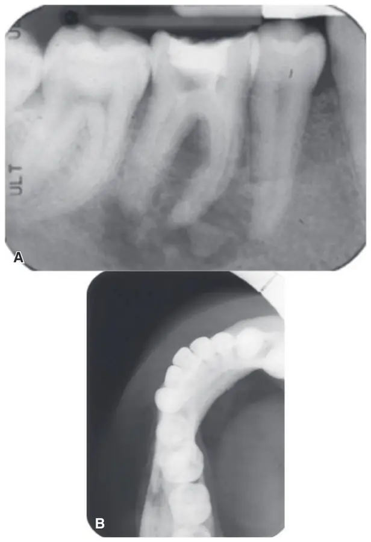
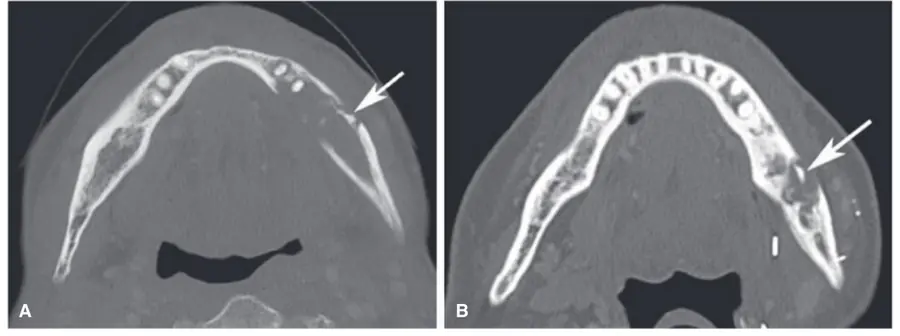

نسخه استخراجشده؛ ترجمه یا تأیید علمی انجام نشده است. وضعیت: captured
ریشهی «مایل» در استئومیلیت به مغز استخوان اشاره دارد؛ پس این واژه به التهابی گفته میشود که مغز استخوان را درگیر میکند.

ولی یک ظرافت مهم: «شایان ذکر است که استئیت رارفاکتیو هم میتواند مغز استخوان را درگیر کند و از راه استخوان امتداد یابد و اسکلروز و نیز استخوانسازی نو پریوستئال سطحی بسازد.» پس تفاوت کجاست؟ «متخصصان باتجربه استئومیلیت را نقطهای افراطیتر روی همان پیوستار بیماری التهابی میبینند که انتشار گستردهتر پاسخ التهابی را در بر میگیرد و شدیدتر است. افزون بر آن، تشخیص استئومیلیت با علائم و نشانههای بالینی بیمار هم شکل میگیرد.»
و چرا این تشخیص مهم است؟ «اگر این تشخیص بهموقع گذاشته و مؤثر مدیریت نشود، عامل عفونی ممکن است در برخی بیماران پایدار بماند و به گسترش ادامه دهد — بهویژه آنها که بیماری سیستمیک مزمن از پیش موجود (مثل کمخونی داسیشکل)، حالت سرکوب ایمنی (HIV/AIDS)، یا اختلالات کاهش عروقرسانی (مثل استئوپتروزیس) دارند.»
محل: «بهطور کلی، بدنهی خلفی مندیبل شایعترین محل بیماری است، و این ظاهراً پیامد خونرسانی نسبتاً ضعیف به استخوان در این ناحیه است. استئومیلیت ماگزیلا نادر است.»
بالین: فاز حاد «همهی سنین را درگیر میکند و غلبهی مردانهی قوی دارد» و «بسیار شایعتر در مندیبل تا ماگزیلا». علائم: «شروع سریع، درد، تورم بافت نرم مجاور، تب، لنفادنوپاتی و لکوسیتوز»؛ دندانها ممکن است متحرک و به دق حساس شوند، و پارستزی لب پایین هم گزارش شده است.
و یک یافتهی متناقضنما در فاز مزمن: «جالب اینکه در استئومیلیت مزمن، نتایج کشت باکتریایی معمولاً منفی است و میکروارگانیسمهای بیماریزا بهندرت یافت میشوند.» و پیامد درمانیاش: «اگر کشتهای میکروبیولوژیک منفی باشند، درمان آنتیبیوتیکی مؤثر نیست» و ممکن است «پاسخ التهابی خودش به فرایند اصلی بیماری تبدیل شده باشد» و ضدالتهابها مؤثرتر باشند.
و یک وضعیت همخانواده در کودکان: استئومیلیت مزمن راجعهی چندکانونی (CRMO). استئومیلیتی غیرچرکی با کشت میکروبیولوژیک منفی است که اغلب قرینه در استخوانهای بلند کودکان رخ میدهد و با درد استخوان درگیر، با تورم یا بدون آن، همراه است. ظاهر تصویریاش همانند استئومیلیت مزمن است؛
و چون آنتیبیوتیک و جراحی مؤثر نبودهاند، با استروئید سیستمیک، NSAID و بیسفسفونات درمان میشود. استئومیلیت مزمن فک در کودکی که علت روشنی ندارد ممکن است واریانت تککانونی CRMO باشد. در استئومیلیت مزمن کشتمنفی هم بیسفسفونات اخیراً موفقیتهایی داشته است.
حاشیه: «فاز حاد اغلب حاشیهی نامشخص و غیرکورتیکه نشان میدهد. با گذشت زمان و مزمن شدن، حاشیه ممکن است واضحتر شود چون پاسخ اسکلروتیک محیطی متراکمتر میشود و منطقهی گذار پهنتر میگردد.»
ساختار داخلی — سیر زمانی را دنبال کن: «در فاز حاد، کاهش خفیف دانسیته با از دست رفتن وضوح ترابکولهای موجود. با شروع انتشار، تحلیل استخوان عمیقتر میشود و ناحیهای از رادیولوسنسی در یک یا چند کانون پراکنده در سراسر استخوان میسازد. با افزایش مزمن بودن، نواحی اسکلروتیک شروع به ظاهر شدن میکنند و دانسیتهی داخلی میتواند تا جایی بالا رود که استخوان کنسلوس بهطور یکنواخت رادیواوپک با دانسیتهای شبیه استخوان کورتیکال شود.»
و نشانهی شاخص (hallmark): «ظاهر استخوان نکروتیک یا سکسترا — استخوانی که خونرسانیاش را از دست داده یا در حال از دست دادن است.» شناساییشان: «یک یا چند قطعهی استخوان رادیواوپک که از همهی طرف با یک محیط رادیولوسنت احاطه شدهاند.» اندازهشان از یک نقطهی کوچک (که «معمولاً در بیماران جوان دیده میشود») تا جزایر بزرگتر متغیر است. و «CBCT یا MDCT بر تصویربرداری مسطح برتری دارد برای آشکار کردن ساختار داخلی استخوان غیرطبیعی و سکسترا، بهویژه وقتی استخوان بسیار متراکم اسکلروتیک یا گرانولار باشد».
و پریوستیت پرولیفراتیو: چون «پاسخ التهابی ممکن است چند دور فعالیت و سکون را طی کند، لایههای متعدد «پوست پیازی» ممکن است پدید آید» و سرانجام «حجم عظیمی از استخوان نو» ساخته شود. این وضعیت «بیشتر در کودکان دیده میشود که پریوست ضخیمتر و شلتر چسبیده با پتانسیل استئوژنیک بالاتر نسبت به بزرگسالان دارند».
تورم یکطرفهی فک — فهرست افتراقی بالینیاش: «استئومیلیت، دیسپلازی فیبرو در کودکان و نوجوانان، و بدخیمی در بزرگسال.»

و نشانهی قاطع: «روی تصویربرداری، حضور سکسترا نشانهی شاخص تشخیصی استئومیلیت است.»
افتراق از دیسپلازی فیبرو — یک تفاوت زیبا در سازوکار: «در دیسپلازی فیبرو، استخوان نو از درون ساخته میشود. کورتکس بیرونی ممکن است با این تغییرات نازک شود، ولی کورتکس سطحی با بزرگ شدن استخوان دستنخورده میماند. همچنین سکستراسیون در دیسپلازی فیبرو دیده نمیشود. در مقابل، استخوان نویی که فک را در استئومیلیت بزرگ میکند، با استخوانسازی نو پریوستئال، سطحیتر از کورتکس بومی رسوب میشود.»
و چرا این تفکیک حیاتی است؟ «چون ظاهر بافتشناختی نمونهی بیوپسی استخوان نو پریوستئال در استئومیلیت ممکن است شبیه دیسپلازی فیبرو باشد، و اگر تصویر رادیولوژیک در اختیار پاتولوژیست دهان و فک گذاشته نشود، ممکن است گزارش نادرست داده شود.»
افتراق از بدخیمی — سه نکته: «هیستیوسیتوز سلول لانگرهانس نواحی تخریب استخوانی نامشخص و غیرکورتیکه میسازد، ولی بهندرت واکنش اسکلروتیک استئومیلیت را تحریک میکند.»، «سارکوم یوئینگ هم میتواند پریوست را تحریک و ظاهر پوست پیازی بسازد» ولی «معمولاً با یک تودهی بافت نرم سریعالرشد و پرحجم همراه است و تخریب استخوانی مشخصهای هم میسازد».
، و قاعدهی کلی: «اگر تخریب ساختارهای مجاور یا سطح خود استخوان وجود داشته باشد، احتمال نئوپلاسم بدخیم باید جدیتر در نظر گرفته شود.»
و افتراق از پاژه: «بیماری پاژه میتواند مندیبل را دوطرفه درگیر کند، که در استئومیلیت نادر است. استخوانسازی نو پریوستئال و سکسترا هم در پاژه دیده نمیشوند.»
حالا تغییرات ناشی از پرتو. «بسیاری از ویژگیهای تصویری استئومیلیت ممکن است در تغییرات استخوان پس از ترومای فیزیکی یا شیمیایی هم دیده شوند. ولی بدون شرح حال بالینی، تفکیک اینها از هم دشوار و شاید ناممکن است.»
و پاسخ دوز-وابستهی استخوان به پرتو: «در دوزهای بسیار پایین در حد ۱ تا ۴ گری، پرتو اثر تحریکی بر استئوبلاستها گزارش شده که رادیوگرافیک بهصورت اسکلروز دیده میشود. بالاتر از این محدوده، دوزهای درمانی ۱۰ گری میتواند به مرگ کندروبلاست و استئوبلاست بینجامد. در دوزهای بالاتر ۲۰ گری، استخوانهای بلند در کودک خردسال میتوانند عقبماندگی رشد برگشتناپذیر پیدا کنند. در مقابل، استخوان بالغ بسیار مقاومتر است و آسیب در دوزهای ۶۰ تا ۷۰ گری رخ میدهد.»
و سازوکار واقعی آسیب دیررس، عروقی است: «بسیاری از اثرات دیررس آسیب پرتوی در استخوان ممکن است به دلیل آسیب به عروق پدید آیند. هرچند سلولهای اندوتلیال عروق بزرگ عموماً مقاوم به پرتواند، دیوارههای نازکتر عروق کوچک ممکن است حساستر باشند.» نتیجه: «استخوان ممکن است هایپوسلولار و هایپوواسکولار شود» و «نبود عروقرسانی کافی به محیطی هایپوکسیک میانجامد که ترمیم استخوان در آن مختل است».
استئورادیونکروز (ORN): «با حضور استخوان اکسپوز پس از پرتودرمانی مشخص میشود» و «مندیبل خلفی بیش از سایر نواحی درگیر میشود چون مکرراً در میدان پرتو قرار دارد، بهویژه وقتی لنفنودها در میدان درمان گنجانده شوند». و «بسیاری از بیماران با اکسپوز استخوان هیچ دردی حس نمیکنند».
و مهمترین نشانهی تصویریاش، پهن شدن PDL است — ولی از نوع خاصی: «شایعترین تغییر در زوائد آلوئولار، پهن شدن نامنظم ولی یکنواخت فضای PDL گرداگرد کل دندانهاست. افزون بر آن، این پهن شدن اپیسنتر مشخصی ندارد و هیچ از دست رفتن استخوانی در کار نیست — و همین آن را از بیماری التهابی پریاپیکال جدا میکند.»
و اعداد بروزش: بروز تجمعی پهن شدن فضای PDL «از ۱۲ درصد در دوازده ماه نخست پس از پرتودرمانی، به ۳۴ درصد در سال دوم، و سرانجام ۵۵ درصد در سال سوم» میرسد، «با پهن شدنِ چشمگیرتر در دوزهای تجمعی مندیبولار بیش از ۴۵ گری».
و یک تفاوت ظریف با استئومیلیت: «پاسخ پریوستئال در ORN تضعیفشده است. احتمالاً به دلیل مرگ ناشی از پرتوِ جمعیت نسبتاً پرتوحساسِ سلولهای بنیادی مزانشیمی در لایهی درونی استئوژنیک پریوست.» و تشخیص ORN «بر شناسایی سکسترا افزون بر شرح حال بیمار» تکیه دارد.
و سرانجام، اکسپوز استخوان مرتبط با دارو (بیسفسفونات). محلها: «مندیبل خلفی ۶۰ درصد و ماگزیلا ۴۰ درصد، هرچند هر دو فک ۹ درصد ممکن است درگیر شوند». و بروز: «مطالعات اخیر پیشنهاد میکنند تقریباً ۳ درصد بیمارانی که این داروها را دریافت میکنند استخوان اکسپوز دارند».
ویژگیهای تصویریاش دو نکتهی مهم دارد: «اغلب هیچ یافتهی تصویری اختصاصی با استخوانِ بالینی اکسپوزشده وجود ندارد» و «در برخی موارد، تغییرات رادیوگرافیک ممکن است از استئومیلیت غیرقابلتفکیک باشند». سایر یافتهها: «پهن شدن فضای PDL شبیه آنچه با پرتو دیده میشود، و ضخیم شدن لامینا دورا».
و مهمترین جملهی مدیریتی این درس: جراحی و اکسیژن هایپرباریک بهطور مداوم موفق نبودهاند؛ پس «تکیهگاه درمان، ماهیت پیشگیرانه دارد. بیمارانی که قرار است این داروها را وریدی دریافت کنند باید معاینهی دندانی شوند تا منابع بالقوه و موجود عفونت برداشته شود و نیاز به اقدامات تهاجمی دندانی در آینده منتفی گردد.» و چرا اینقدر فوریت دارد؟ «نیمهعمر برخی از این داروها در استخوان میتواند تا ۱۲ سال باشد.»